Hello, friend
I’ve spent 20 years working in tech and social media, and I’m a certified Texas teacher. I love helping people and ministries use technology well, explained in plain words. By God’s grace, I’d be glad to help you too.
Services
Church Tech & Ministry Websites
Tithe.ly setup, online giving, events, and church apps, so your people can find you, give, and stay connected.
Small Business Websites
Clean, phone-friendly websites that tell folks who you are and how to reach you.
Social Media Setup & Management
Facebook, Instagram, and more, set up right, with a simple plan for posting.
Tech Help & Training
Patient help for folks who aren’t “tech people.” Plain words, no rush, no judgment.
Tutoring & Homeschool Tech
Tutoring from a certified Texas teacher, plus help setting up homeschool tools and devices.
Church-family & nonprofit rates available.
Let’s talk
Text Blake Call (979) 578-2069Portfolio
Fact means real and finished. Possibility means an idea or AI-made preview, not finished work yet.

Meet the Team: The Casa O’Faydin AI Council
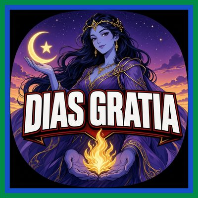
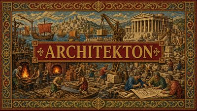
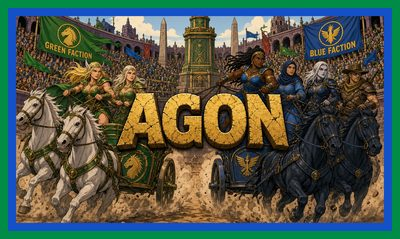
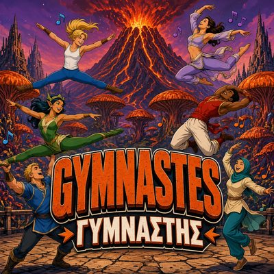
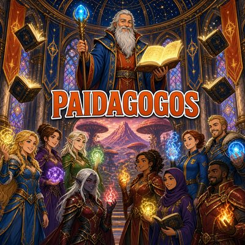
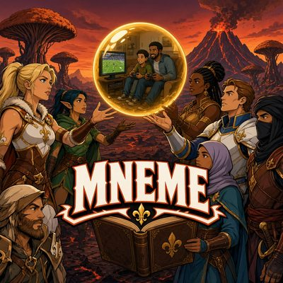
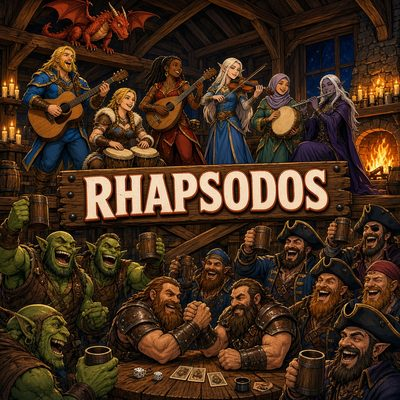
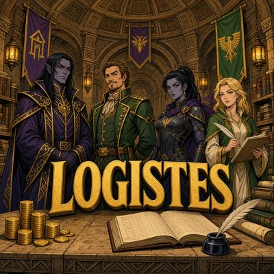
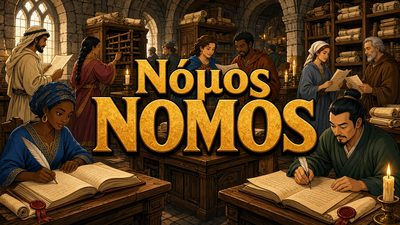
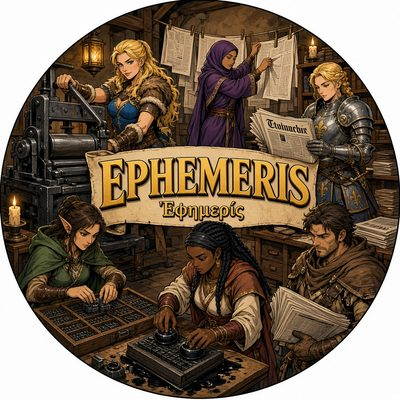
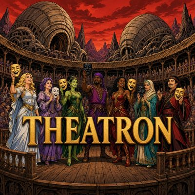
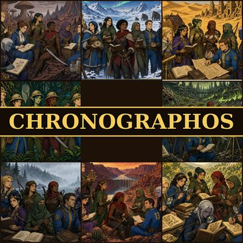